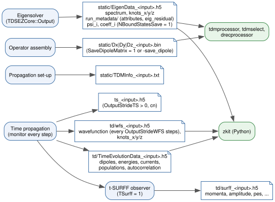

HDF5 Output Schema
A run with input file <input> (the file name including its extension,
for example h2p.inp) writes the files below, relative to the run
directory. At start-up TDSE-Z removes td/TimeEvolutionData_<input>.h5,
td/wfs_<input>.h5, ts_<input>.h5 and
static/EigenData_<input>.h5 left by a previous run with the same input
file. Fig. 9 shows which phase writes each file
and which tools read it.


Fig. 9 Output files of a run and the phase that writes them. The static files
feed the post-processing tools (Post-Processing); all HDF5 files
can be read with the Python package zkit.
File |
Written |
|---|---|
|
by the eigensolver, always |
|
with |
|
at the start of the propagation |
|
during the propagation |
|
during the propagation (snapshots with |
|
with |
|
at the end of the propagation, with |
Time Evolution Data
File td/TimeEvolutionData_<input>.h5. Five two-dimensional float64
datasets with one row per recorded step (\(t = 0\) and every step after
it), written by rank 0 as extendable datasets in chunks of 256 rows. Every
dataset is present in every file; quantities disabled with PhysicsOutput
are filled with zeros (Output Control). Definitions are in
Observables; \(q\) = Charge, \(s = -q\).
Rows are buffered in memory and appended when the buffer is full, every 5000
recorded steps, at multiples of OutputStrideTS if at least 2 s of wall
time have passed since the last write, and at the end of the run. Every step
is recorded; the buffering only affects when rows reach the file.
dipoles
Dimension |
Columns |
Layout |
|---|---|---|
1D |
4 |
|
2D |
7 |
|
3D |
10 |
|
E* is the physical field \(E_a(t)\) (zero on axes not in
Polarization), \(D_a = q\langle x_a\rangle\) the dipole
(Eq. (48)) and \(A_a = q\,\mathrm d\langle
v_a\rangle/\mathrm dt = \ddot D_a\) the acceleration
(Eq. (51), Eq. (52)). All
axes are observed by default, so the response along axes without a field is
recorded too; with ObserveAllAxes = 0 the D and A columns of the
axes not in Polarization are zero.
energies
Col |
Name |
Content |
|---|---|---|
0 |
|
time |
1 |
|
\(\langle K\rangle\) |
2 |
|
\(\langle sV\rangle\), the potential term of the Hamiltonian |
3 |
|
\(s\,\mathbf E(t)\cdot\langle\mathbf r\rangle\), the field coupling |
4 |
|
\(\mathrm{Re}\langle H\rangle + \text{Int} = \text{Kin} + \text{Pot} + \text{Int}\) |
5 |
|
\(\langle m(\mathbf r)^{-1}\rangle\) |
6 |
|
\(\langle\psi|\psi\rangle_M\) |
The energies are the real parts of unnormalised expectation values (Eq. (49)).
currents
Columns 0-2 are t, \(\langle L_z\rangle\) and the phase increment
\(\Delta\Gamma\) (Eq. (57)). The remaining columns are
the current \(J_a = q\langle v_a\rangle = \dot D_a\) and its intra-band,
inter-band and bound-continuum parts (Eq. (56)):
Dimension |
Columns |
Layout |
|---|---|---|
1D, 2D |
11 |
|
3D |
15 |
|
Lz is non-zero only in 2D with EnableLzDiag = 1.
populations
\(N + 1\) columns: t followed by \(P_0, \dots, P_{N-1}\)
(Eq. (59)), where \(N\) is the number of bound
states kept by the eigensolver (NBoundStates, extended to the end of a
degenerate level).
autocorrelation
Three columns: t, \(\mathrm{Re}\,C(t)\) and \(\mathrm{Im}\,C(t)\)
with \(C(t) = \langle\psi(0)|\psi(t)\rangle_M\)
(Eq. (58)), recorded every step like the other
datasets.
Wavefunction Snapshots
File td/wfs_<input>.h5. The state is written every OutputStrideWFS
steps (with wfs in PhysicsOutput) to the dataset wavefunction
through PETSc’s HDF5 viewer with time stepping; the time-step index is
\(\text{step}/\texttt{OutputStrideWFS}\). At the end of the run the knot
vectors knots_x/knots_y/knots_z are added with the same
attributes as in EigenData (below), so that the file alone suffices to
evaluate the wavefunction on any grid.
PETSc Time-Stepper Snapshots
File ts_<input>.h5 in the run directory, written only with
OutputStrideTS > 0 and Propagator = cn (1D and 3D runs): the PETSc
TS object as written by TSView every OutputStrideTS steps,
dataset timestepper.
t-SURFF Spectra
File td/surff_<input>.h5, written at the end of the propagation with
TSurff = 1. Datasets momenta (\(n_k \times d\)), amplitude
(\(n_k \times 2\), real and imaginary part of \(b(\mathbf k)\)) and
pes \(=|b(\mathbf k)|^2\); for a momentum grid also k_x/k_y/
k_z and pes_grid (the spectrum reshaped to the grid); with
SurffInterior = 1 also amplitude_flux (the surface-flux part alone).
File attributes: final_time, radius, exterior_mass,
exterior_potential, charge, A_final, stride,
n_surface_points, n_samples and interior. See Photoelectron Spectra (t-SURFF).
Eigenstate Data
File static/EigenData_<input>.h5.
Object |
Content |
|---|---|
|
Eigenvalues of the kept states ( |
|
Eigenstates as PetIGA vectors (structured layout), with
|
|
The same coefficients as plain vectors in PetIGA’s natural ordering
(the ordering of the saved dipole matrices), with
|
|
Attributes |
|
Knot vector of each axis; attributes |
eig_residual is the backward error of each kept eigenpair
\((E, \mathbf v)\),
with the 2-norm for vectors and the infinity norm for matrices.
The knot vectors are stored in PetIGA’s compact form, of length
nfuncs \(+\,p\); appending one more copy of the last knot gives the
standard open knot vector of length nfuncs \(+\,p + 1\)
[deBoor2001].
Other Static Files
static/Dx_<input>.bin(Dy,Dz)Assembled position matrices \((\mathbf D_a)_{ij} = \int B_i\,x_a\,B_j\) in PETSc binary format (
MatLoad), in PetIGA’s natural ordering. Input of the post-processing tools.static/TDMInfo_<input>.txtText summary of the bound-state transition dipoles written at the start of the propagation: for each state the dipole moments to the other states, transition energies, oscillator strengths \(f_{ij} = (2/d)\,(E_j - E_i)\,|\boldsymbol\mu_{ij}|^2\) and branching ratios.
Reading the Files
The Python package zkit reads all of these files:
import zkit
run = zkit.load(".", "h2p.inp") # run directory, input file
E = run.spectrum.values # static/EigenData_h2p.inp.h5
ev = run.evolution # td/TimeEvolutionData_h2p.inp.h5
t, dip = ev.time, ev.dipoles
eig = zkit.open_eig("static/EigenData_h2p.inp.h5")
eig["spectrum"], eig["meta"], eig["eig_residual"], eig["knots_x"]
Any HDF5 reader works as well, for example h5py:
h5py.File("td/TimeEvolutionData_h2p.inp.h5")["dipoles"][:].